Metadatenschemata erstellen — Ein Leitfaden für Data Stewards
Mit Contour entwirfst du eigene Metadatenschemata visuell — indem du Formular-Widgets auf eine Arbeitsfläche ziehst oder anklickst — und exportierst sie als standardkonforme SHACL-Shapes mit DASH-Formularannotationen. Das Ergebnis lässt sich direkt in einen FAIR Data Point oder jede SHACL-fähige Plattform übernehmen.
Der Slogan von Contour: Visual schemas. Clean SHACL.
Dieser Leitfaden richtet sich an Data Stewards, die festlegen möchten, welche Metadaten ihre Community für einen bestimmten Ressourcentyp bereitstellen muss (oder darf) — einen Datensatz, eine Studie, eine Probe, ein Softwarepaket —, ohne dafür Turtle von Hand zu schreiben.
Keine Installation, kein Server. Der Editor ist eine einzige, in sich geschlossene Webseite. Öffne sie in Chrome oder Edge (empfohlen, für das direkte Speichern von Dateien) — Firefox und Safari funktionieren ebenfalls, dann mit einem Speichern im Download-Stil.
Inhaltsverzeichnis
- Was du erstellst (Schlüsselkonzepte)
- Die Oberfläche im Überblick
- Tutorial: ein Datensatz-Schema von Grund auf erstellen
- Schritt 1 — Die Identität des Schemas festlegen
- Schritt 2 — Vokabulare verwalten (Präfixe)
- Schritt 3 — Das Formular in Gruppen gliedern
- Schritt 4 — Deine erste Eigenschaft hinzufügen (ein Textfeld)
- Schritt 5 — Kardinalität und Validierungseinschränkungen festlegen
- Schritt 6 — Eine mehrzeilige Beschreibung hinzufügen
- Schritt 7 — Eine Datums-Eigenschaft hinzufügen
- Schritt 8 — Ein kontrolliertes Vokabular hinzufügen (Enumeration)
- Schritt 9 — Eine andere Entität referenzieren (IRI + Klasse)
- Schritt 10 — Ein Unterobjekt mit einer verschachtelten Shape modellieren
- Schritt 11 — Das Eingabeformular in der Vorschau ansehen
- Schritt 12 — Den generierten SHACL-Code prüfen
- Schritt 13 — Speichern und exportieren
- Direkt mit dem Code arbeiten (der Tab SHACL-Code)
- Deine Arbeit überprüfen (das Problem-Panel)
- Power-Funktionen (fortgeschrittene Modellierung)
- Referenz
- Rezepte — gängige Modellierungsmuster
- Tipps und Fehlerbehebung
1. Was du erstellst (Schlüsselkonzepte)
Ein Metadatenschema in diesem Werkzeug ist eine SHACL-NodeShape: eine Beschreibung dessen, wie ein gültiger Datensatz eines bestimmten Typs aussieht. Ein paar Begriffe, die dir durchgehend begegnen werden:
| Begriff | Was er für dich bedeutet |
|---|---|
| NodeShape | Das Schema selbst — z. B. „was ein Datensatz-Eintrag enthalten muss". |
Zielklasse (sh:targetClass) |
Der RDF-Typ, für den das Schema gilt, z. B. dcat:Dataset. Einträge dieses Typs werden gegen dein Schema validiert. |
Eigenschaft (sh:property) |
Ein einzelnes Feld — Titel, Herausgeber, Veröffentlichungsdatum … Jede Eigenschaft hat einen Pfad, ein Widget und Einschränkungen. |
Eigenschaftspfad (sh:path) |
Das RDF-Prädikat, in das das Feld schreibt, z. B. dct:title. Das ist der tatsächlich in den Metadaten gespeicherte Term. |
Widget (dash:editor) |
Das Formularelement, das der Person angezeigt wird, die die Metadaten ausfüllt — ein Textfeld, eine Datumsauswahl, ein Dropdown usw. |
Gruppe (sh:PropertyGroup) |
Ein visueller Abschnitt, der zusammengehörige Felder bündelt, z. B. „Allgemeine Informationen". |
Präfix (@prefix) |
Ein kurzes Kürzel für einen Vokabular-Namespace, z. B. dct: → http://purl.org/dc/terms/. |
All das gestaltest du visuell; das Werkzeug schreibt den SHACL-Code für dich.
2. Die Oberfläche im Überblick
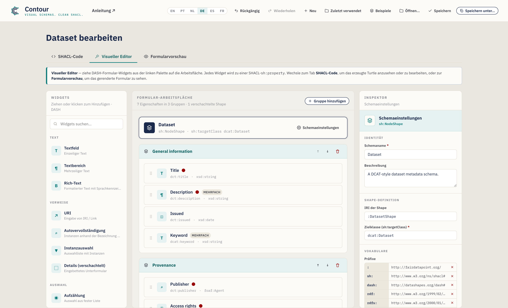
Das Fenster hat drei Tabs:
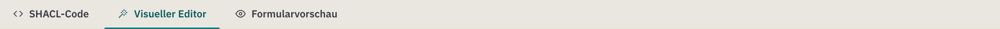
- SHACL-Code — das serialisierte Schema. Standardmäßig Turtle, mit Autovervollständigung; Änderungen werden mit der visuellen Arbeitsfläche synchronisiert. Eine Syntax-Auswahl bietet außerdem N-Triples, TriG, Notation3 und einen JSON-LD-Export. Hier werden auch die Dateien angezeigt, die du öffnest.
- Visueller Editor — der Drag-and-drop-Arbeitsbereich (oben abgebildet). Hier findet der größte Teil deiner Arbeit statt.
- Formularvorschau — eine realistische Darstellung des Eingabeformulars, das dein Schema erzeugt, damit du das Ergebnis vor der Veröffentlichung testen kannst.
Der Visuelle Editor ist in drei Spalten aufgeteilt:
| Spalte | Zweck |
|---|---|
| Widgets (links) | Die Palette der Formularelemente. Ziehe eines auf die Arbeitsfläche oder klicke es einfach an (Tastatur: Fokus + Enter), um es hinzuzufügen. |
| Formular-Arbeitsfläche (Mitte) | Dein Schema: das Zielklassen-Banner, die Gruppen, die Eigenschaften und die verschachtelten Shapes. |
| Inspektor (rechts) | Einstellungen für das jeweils ausgewählte Element — das Schema, eine Gruppe oder eine Eigenschaft. |
Unter dem Arbeitsbereich befindet sich eine Aktionsleiste mit einem Zähler für Eigenschaften/Gruppen, einer Problem-Anzeige (eine laufende Prüfung deines Schemas — siehe §5) sowie Schaltflächen zum Speichern und Kopieren. Um das serialisierte Schema zu sehen, wechsle zum Tab SHACL-Code; um das gerenderte Formular zu sehen, wechsle zur Formularvorschau.
Die Kopfzeile enthält die Dateiaktionen — Rückgängig / Wiederholen, Neu, Zuletzt verwendet, Beispiele, Öffnen, Speichern, Speichern unter — sowie den Sprachumschalter und einen Link zum Leitfaden:
Deine Arbeit wird laufend gespeichert. Contour hält einen automatisch gespeicherten Entwurf in deinem Browser vor, sodass ein Neuladen oder ein versehentliches Schließen des Tabs nichts verloren gehen lässt — bei der Rückkehr siehst du den Hinweis „Nicht gespeicherten Entwurf wiederhergestellt". Mit Rückgängig/Wiederholen (oder Strg/Cmd+Z und Strg/Cmd+Umschalt+Z) gehst du deine Änderungen durch, und über das Menü Zuletzt verwendet öffnest du gespeicherte Schemata erneut.
Sprache der Oberfläche
Die Oberfläche von Contour ist auf Englisch (Standard), brasilianischem Portugiesisch, Niederländisch, Deutsch, Spanisch und Französisch verfügbar. Wechsle mit dem Sprachumschalter (EN / PT / NL / DE / ES / FR) in der Kopfzeile — deine Auswahl wird zwischen den Sitzungen gemerkt. Ist die bevorzugte Sprache deines Browsers eine davon, öffnet Contour automatisch in dieser Sprache; andernfalls wird auf Englisch zurückgegriffen. Nur die Oberfläche wird übersetzt; der Inhalt deines Schemas (Namen, Beschreibungen, Eigenschaftspfade) und der generierte SHACL-Code werden niemals verändert, sodass das exportierte Turtle in jeder Sprache identisch ist.
3. Tutorial: ein Datensatz-Schema von Grund auf erstellen
Wir erstellen ein Metadatenschema Datensatz im DCAT-Stil. Jeder Schritt führt eine Funktion des Werkzeugs ein, und am Ende hast du jede wichtige Fähigkeit einmal genutzt.
Contour startet leer, damit du dein eigenes Schema von Grund auf aufbauen kannst — der Seitentitel lautet Neues Metadatenschema, bis du es benennst. Wenn du lieber ein fertiges Schema erkunden möchtest, lädt das Menü Beispiele in der Kopfzeile vorgefertigte Vorlagen (Datensatz, Agent, Konzept); das Beispiel Datensatz entspricht dem, was wir unten aufbauen:
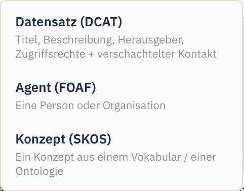
Wechsle durchgehend zum Tab Visueller Editor, um die Arbeit zu erledigen. Um jederzeit mit einem frischen Schema zu beginnen, verwende die Schaltfläche Neu.
Schritt 1 — Die Identität des Schemas festlegen
Klicke auf das Schema-Banner oben auf der Arbeitsfläche (es lautet Unbenanntes Schema, bis du es benennst) oder auf die Schaltfläche Schema-Einstellungen. Der Inspektor wechselt zu den Einstellungen auf Schema-Ebene:
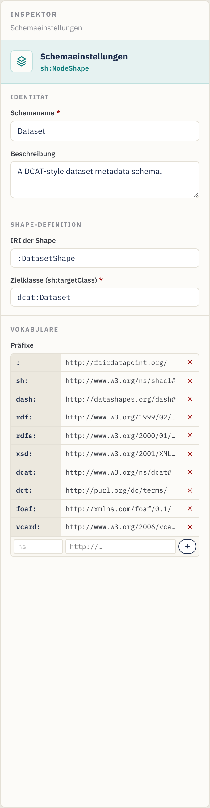
Fülle Folgendes aus:
- Schema-Name — eine menschenlesbare Bezeichnung, z. B.
Dataset. (Sobald er gesetzt ist, ändert sich der Seitentitel von Neues Metadatenschema zu Datensatz bearbeiten; benenne es für jede beliebige Domäne — eine Ontologieklasse, einen Katalog —, und der Titel folgt.) - Beschreibung — ein Satz, der den Zweck des Schemas beschreibt.
- Shape-IRI — der Bezeichner der Shape, z. B.
:DatasetShape. Das führende:verwendet deinen Standard-Namespace; du kannst den vorgeschlagenen Wert belassen. - Zielklasse (
sh:targetClass) — die RDF-Klasse, die dieses Schema validiert, z. B.dcat:Dataset. Sie ist erforderlich, damit das Schema nützlich ist — sie sagt einer Plattform: „Wende diese Regeln auf Datensatz-Einträge an".
Schritt 2 — Vokabulare verwalten (Präfixe)
Scrolle in den Schema-Einstellungen weiter zu Vokabulare. Präfixe erlauben es
dir, kurze Terme wie dct:title statt vollständiger URLs zu schreiben.
Der Editor bringt die gängigen bereits deklariert mit — sh, dash, rdf,
rdfs, xsd, dcat, dct, foaf und das leere Standardpräfix :. Um eigene
hinzuzufügen (zum Beispiel ein Domänenvokabular):
- Gib in der leeren Zeile am Ende der Präfix-Tabelle das Kürzel (z. B.
vcard) in das erste Feld ein. - Gib die Namespace-URL (z. B.
http://www.w3.org/2006/vcard/ns#) in das zweite Feld ein. - Drücke Enter oder klicke auf die Schaltfläche +.
Entferne ein Präfix mit dem × daneben. Jedes Präfix, das du in einem Eigenschaftspfad oder einer Klasse verwendest, sollte hier deklariert sein, damit das exportierte Turtle gültig ist.
Schritt 3 — Das Formular in Gruppen gliedern
Gruppen (sh:PropertyGroup) sind die Abschnitte deines Formulars. Auf einer
leeren Arbeitsfläche kannst du einfach dein erstes Widget auf die Arbeitsfläche
ziehen, und Contour erstellt die erste Gruppe für dich — oder klicke auf
Gruppe hinzufügen (oben rechts auf der Arbeitsfläche), um einen leeren
Abschnitt zum Ablegen zu erzeugen:
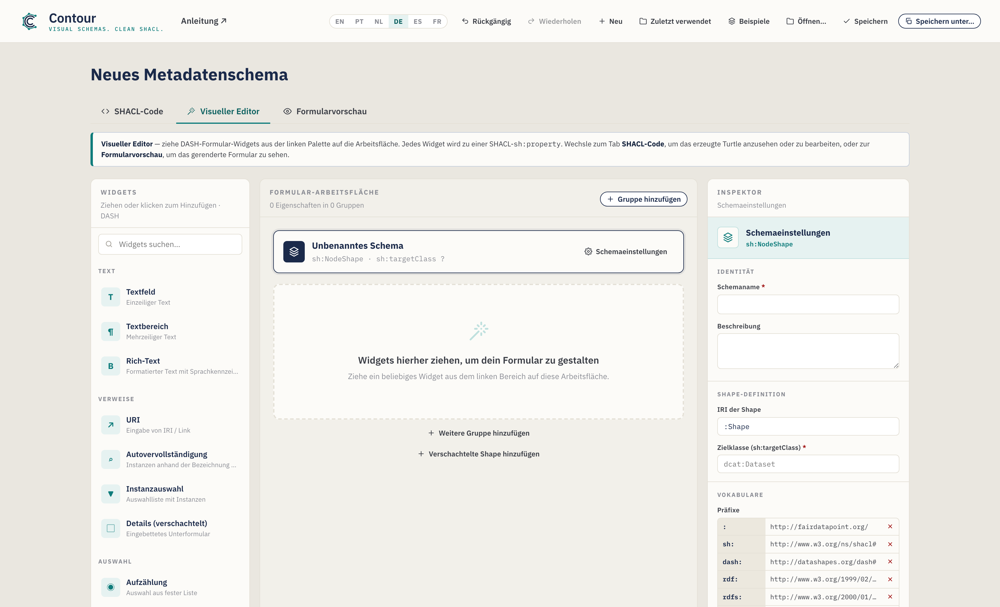
- Benenne eine Gruppe um, indem du auf ihren Titel klickst und tippst — z. B.
Allgemeine Informationen. - Ordne sie mit den Schaltflächen ↑ / ↓ in der Gruppenkopfzeile neu an (dies nummeriert die Gruppen für dich neu).
- Lösche sie mit dem Papierkorbsymbol in der Gruppenkopfzeile.
Erstelle für dieses Tutorial zwei Gruppen: Allgemeine Informationen und Provenienz.
Schritt 4 — Deine erste Eigenschaft hinzufügen (ein Textfeld)
Füge aus der Widgets-Palette auf der linken Seite ein Textfeld zur Gruppe Allgemeine Informationen hinzu — entweder ziehe es auf die Gruppe oder klicke es einfach an (es wird der ausgewählten oder der zuletzt verwendeten Gruppe hinzugefügt). Tastaturnutzer können ein Widget fokussieren und Enter drücken. Die Widgets sind nach Kategorie geordnet (Text, Referenzen, Auswahl, Datum und Zahl) und über das Feld oben durchsuchbar.
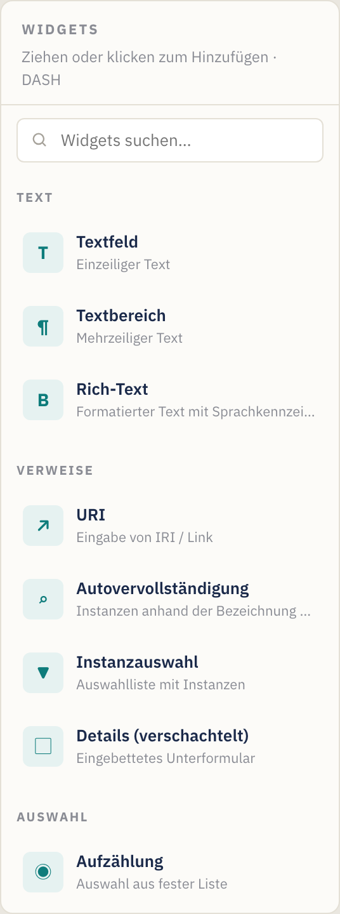
Wenn du ein Widget hinzufügst, wird es zu einer Eigenschaftskarte auf der Arbeitsfläche und automatisch ausgewählt. Eine Eigenschaftskarte zeigt ihre Bezeichnung, ihren Pfad, ihren Typ und Status-Badges (einen roten Punkt für erforderlich, ein „multi"-Badge für wiederholbar):

Jede Karte hat Griffe zum Neuanordnen per Drag-and-drop (der Griff links), zum Duplizieren und zum Löschen (die Symbole rechts, beim Überfahren mit der Maus).
Wenn das neue Feld ausgewählt ist, zeigt der Inspektor seine Eigenschaftseinstellungen. Lege fest:
- Bezeichnung (
sh:name) →Titel— die den Nutzern angezeigte Feldbezeichnung. - Beschreibung → optionaler Hilfetext (erscheint als ⓘ-Tooltip im Formular).
- Eigenschaftspfad (
sh:path) →dct:title— der RDF-Term, in den dieses Feld schreibt. Setze ihn immer; der voreingestellte Platzhalterpfad ist nicht aussagekräftig. Während du tippst, schlägt Contour gängige Prädikate vor (und deine deklarierten Präfixe); wähle eines aus oder tippe dein eigenes weiter.
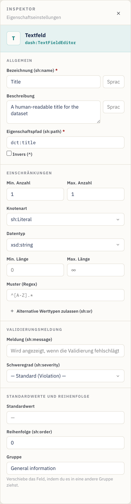
Schritt 5 — Kardinalität und Validierungseinschränkungen festlegen
Der Abschnitt Einschränkungen des Inspektors steuert die Validierung. Für Titel:
- Min count =
1, Max count =1→ genau ein Titel ist erforderlich. (Min count ≥ 1 macht das Feld erforderlich — beachte den roten Punkt auf der Karte und das rote Sternchen in der Formularvorschau.) - Node kind =
sh:Literal(ein einfacher Wert statt eines Links). - Datatype =
xsd:string. - Optional Min/Max length und ein Pattern (ein regulärer Ausdruck, z. B.
^[A-Z].*, um einen Großbuchstaben am Anfang zu erzwingen).
Kardinalitäts-Spickzettel: Min 1 / Max 1 = erforderlich, einzelner Wert. Min 0 / Max 1 = optional, einzelner Wert. Min 1 / Max ∞ (Max leer lassen) = erforderlich, wiederholbar. Min 0 / Max ∞ = optional, wiederholbar.
Wertebereich (Zahlen und Daten). Felder vom Typ Zahl, Datum sowie Datum und
Uhrzeit zeigen einen Abschnitt Wertebereich — lege Min (≥) / Max (≤)
(einschließlich) oder die exklusiven Grenzen (>) / (<) fest. Zahlen werden
unverziert geschrieben (sh:minInclusive 1900), Daten als typisierte Literale
("2020-01-01"^^xsd:date).
Benutzerdefinierte Validierungsmeldung (optional). Im Abschnitt
Validierungsmeldung kannst du den Text festlegen, den eine Plattform anzeigt,
wenn dieses Feld fehlschlägt (sh:message), sowie dessen Schweregrad —
Violation (Standard), Warning oder Info (sh:severity).
Schritt 6 — Eine mehrzeilige Beschreibung hinzufügen
Ziehe einen Textbereich in Allgemeine Informationen. Lege fest:
- Bezeichnung →
Beschreibung, Pfad →dct:description. - Min count =
1, Max count leer lassen (∞), damit mehrere Sprachvarianten bereitgestellt werden können. Die Karte zeigt nun ein multi-Badge, und die Formularvorschau erhält eine Schaltfläche + Hinzufügen.
Schritt 7 — Eine Datums-Eigenschaft hinzufügen
Ziehe eine Datumsauswahl in Allgemeine Informationen. Lege fest:
- Bezeichnung →
Veröffentlicht, Pfad →dct:issued. - Min count =
0, Max count =1(optional, einzeln). - Der Datentyp ist standardmäßig
xsd:date, was für ein Kalenderdatum korrekt ist. (Verwende stattdessen Datum und Uhrzeit, wenn du einen Zeitstempel benötigst —xsd:dateTime.)
Schritt 8 — Ein kontrolliertes Vokabular hinzufügen (Enumeration)
Wechsle zur Gruppe Provenienz und ziehe ein Enumeration-Widget hinein. Das
erzeugt ein Dropdown, das auf eine feste Liste von Werten beschränkt ist
(sh:in).
Im Inspektor erscheint ein Editor für Zulässige Werte:
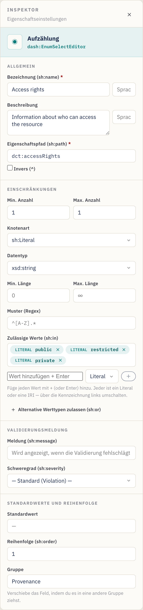
- Bezeichnung →
Zugriffsrechte, Pfad →dct:accessRights. - Tippe unter Zulässige Werte jede Option ein und drücke Enter:
public,restricted,private. Entferne eine mit ihrem ×. - Min/Max count
1/1, um genau eine Auswahl zu verlangen.
Die Werte werden als sh:in ( "public" "restricted" "private" ) exportiert.
Literal- vs. IRI-Werte. Jeder zulässige Wert trägt einen Literal / IRI-Umschalter (das kleine Tag links davon). Belasse ihn auf Literal für einfachen Text wie
public; stelle ihn auf IRI, wenn die Auswahlmöglichkeiten Terme aus einem kontrollierten Vokabular sind (z. B.ex:Public, einskos:Concept), damit sie als IRIs und nicht als Strings exportiert werden.
Schritt 9 — Eine andere Entität referenzieren (IRI + Klasse)
Manche Eigenschaften verweisen auf eine andere Ressource, statt einen einfachen Wert zu enthalten — der Herausgeber eines Datensatzes ist beispielsweise eine Organisation, kein String. Ziehe ein Auto-complete-Widget in Provenienz. Das rendert ein Suchfeld, das bestehende Instanzen nachschlägt.
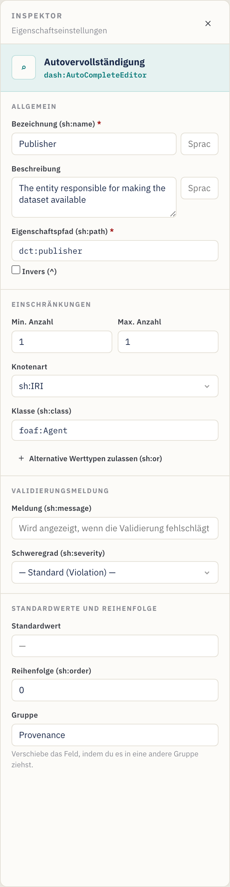
- Bezeichnung →
Herausgeber, Pfad →dct:publisher. - Node kind =
sh:IRI(der Wert ist ein Link/Bezeichner). - Class (
sh:class) →foaf:Agent— beschränkt die Auswahl auf Instanzen dieser Klasse. (Das Feld Class erscheint nur, wenn das Node kind IRI-basiert ist.) - Min/Max count
1/1.
Weitere Referenz-Widgets: URI (freier Link), Instances select (ein Dropdown von Instanzen). Verwende, was am besten dazu passt, wie der Wert ausgewählt wird. Das Feld Class schlägt während des Tippens gängige Klassen vor.
Fortgeschritten: Eine Eigenschaft kann über Alternative Werttypen (
sh:or) auch entweder ein Literal oder eine IRI akzeptieren (und ähnliche „einer dieser Typen"-Regeln) oder einer Beziehung rückwärts über einen Inverse (^)-Pfad folgen — siehe §6 Power-Funktionen.
Schritt 10 — Ein Unterobjekt mit einer verschachtelten Shape modellieren
Manchmal ist ein Feld selbst ein kleines strukturiertes Objekt. Ein Kontaktpunkt etwa hat seinen eigenen Namen und seine eigene E-Mail. Modelliere das mit einer verschachtelten Shape und dem Widget Details (verschachtelt).
- Klicke unten auf der Arbeitsfläche auf Verschachtelte Shape hinzufügen.
Eine neue Shape erscheint unter dem Trenner Verschachtelte Shapes und ist
ausgewählt. Lege im Inspektor ihre Shape-IRI (z. B.
:ContactShape) und optional eine Zielklasse (z. B.vcard:Kind) fest. Das Umbenennen der IRI aktualisiert automatisch jede Eigenschaft, die sie referenziert. - Ziehe Widgets auf die verschachtelte Shape genau wie auf eine Gruppe —
z. B. ein Textfeld
Vollständiger Name(vcard:fn) und eine URIE-Mail(vcard:hasEmail). - Füge zurück in einer Gruppe ein Details (verschachtelt)-Widget hinzu. Lege
in dessen Inspektor Verschachtelte Shape (
sh:node) auf:ContactShapefest (das Feld bietet deine verschachtelten Shapes als Vorschläge an).
Abkürzung. Bei einer Details-Eigenschaft kannst du auf Verschachtelte Shape erstellen und verknüpfen klicken, um in einem Schritt eine neue Shape anzulegen und
sh:nodedamit zu verdrahten — füge dann einfach ihre Felder hinzu. Die Eigenschaftskarte zeigt den Link, auf den sie verweist (z. B.→ :ContactShape), und das Problem-Panel markiert eine Details-Eigenschaft, deren Ziel fehlt.
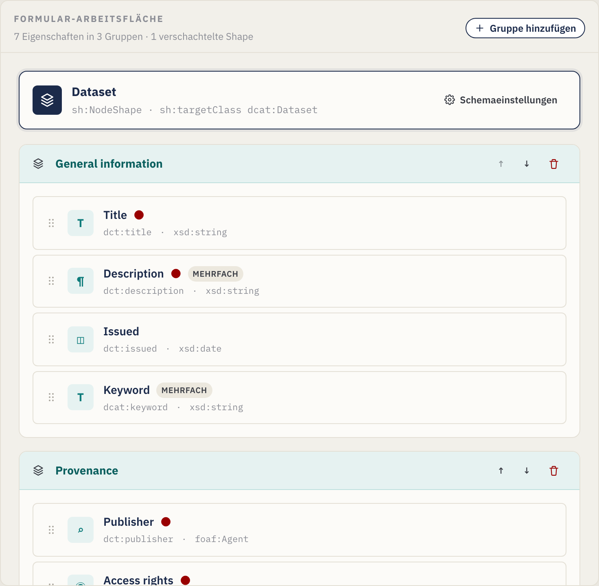
Der Inspektor der Details-Eigenschaft verknüpft sie über sh:node mit der
verschachtelten Shape:
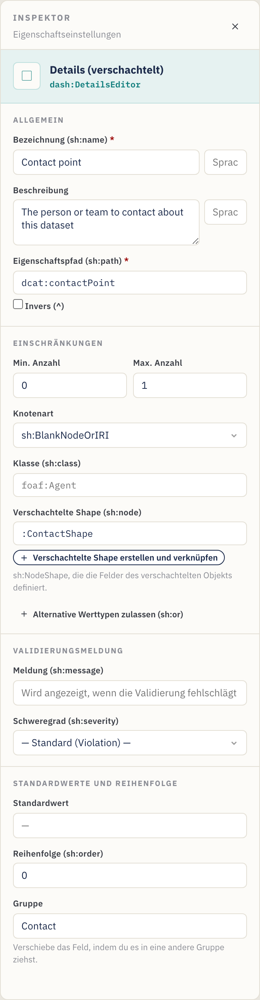
Die Karte der verschachtelten Shape auf der Arbeitsfläche enthält ihre eigenen Eigenschaften:

Schritt 11 — Das Eingabeformular in der Vorschau ansehen
Öffne jederzeit den Tab Formularvorschau, um zu prüfen, was die Person sieht,
die die Metadaten eingibt. Die Vorschau spiegelt deine Einschränkungen wider:
Erforderliche Felder zeigen ein rotes Sternchen, ein kleiner
Kardinalitäts-Chip zeigt die zulässige Anzahl (z. B. 1–3), Beschreibungen
werden zu ⓘ-Tooltips, wiederholbare Felder erhalten Schaltflächen +
Hinzufügen, Muster/Längen/Bereiche werden auf die Eingaben angewendet,
sprachmarkierter Text erhält ein kleines Sprachfeld, jede
Validierungsmeldung erscheint unter dem Feld, und Details-Eigenschaften
rendern die Felder ihrer verschachtelten Shape inline — in beliebiger
Schachtelungstiefe:
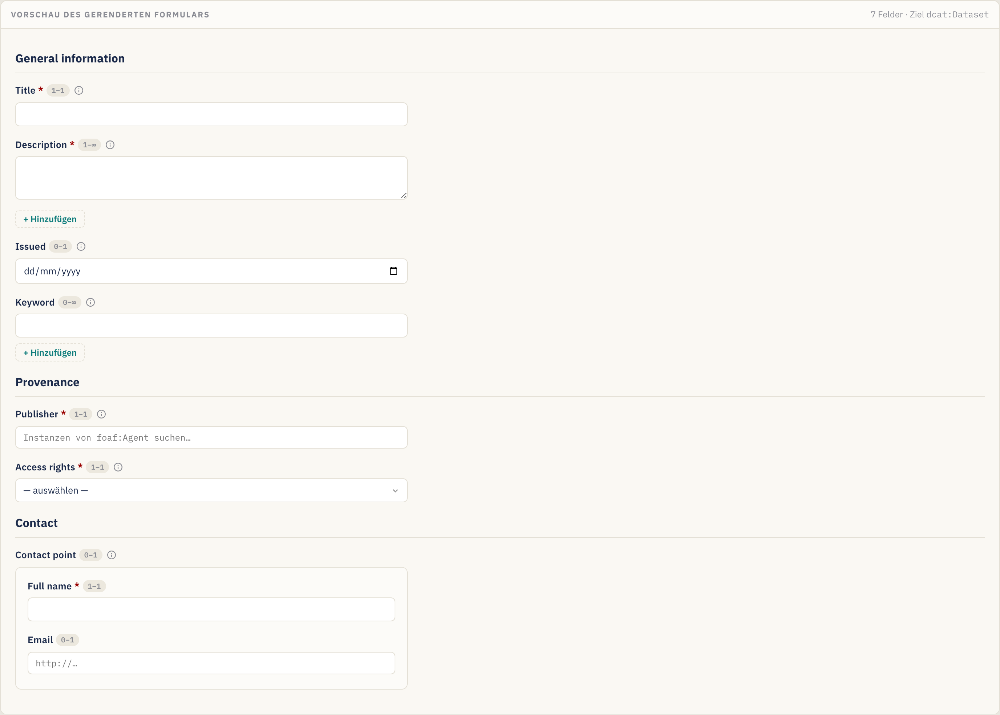
Diese Vorschau ist schreibgeschützt — sie dient dazu, das Design zu validieren, nicht dazu, echte Daten zu erfassen.
Schritt 12 — Den generierten SHACL-Code prüfen
Der Tab SHACL-Code zeigt das aus deinem Design generierte Turtle (und lässt dich es direkt bearbeiten):
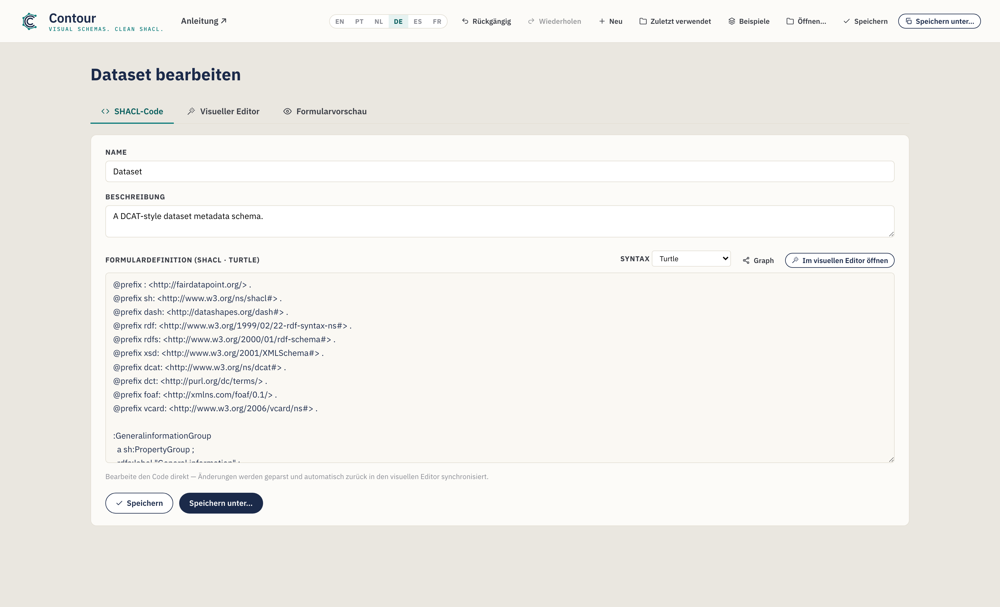
Alles, was du visuell konfiguriert hast, ist hier — die @prefix-Deklarationen,
die PropertyGroups, die NodeShape mit ihren sh:property-Blöcken und alle
verschachtelten Shapes. Die Schaltfläche SHACL kopieren in der Aktionsleiste
des Visuellen Editors legt die Serialisierung in deine Zwischenablage. Verwende
die Syntax-Auswahl, um andere Formate anzuzeigen oder zu exportieren,
einschließlich JSON-LD (siehe
§4).
Schritt 13 — Speichern und exportieren
Speichere dein Schema (standardmäßig eine .ttl-Datei):
- Speichern unter … — wähle einen neuen Dateinamen und Speicherort. Die
Endung richtet sich nach der gewählten Syntax (
.ttl,.nt,.trig,.n3oder.jsonld). - Speichern — zurück in die zuletzt geöffnete/gespeicherte Datei schreiben (Strg/Cmd+S). Die Schaltfläche zeigt kurz Gespeichert! zur Bestätigung.
- SHACL kopieren — die aktuelle Serialisierung kopieren, ohne eine Datei zu speichern.
- Zuletzt verwendet (Kopfzeile) — ein Schema erneut öffnen, das du früher in dieser Sitzung gespeichert hast.
In Chrome/Edge wird die Datei direkt auf die Festplatte geschrieben. In Firefox/Safari greift der Editor auf einen normalen Download zurück. Der vorgeschlagene Dateiname wird aus dem Schema-Namen abgeleitet (z. B.
dataset.ttl). In beiden Fällen wird zwischen den Sitzungen ein automatisch gespeicherter Entwurf in deinem Browser vorgehalten.
Lade die resultierende .ttl-Datei als Metadatenschema in deinen FAIR Data Point
(oder eine andere SHACL-Plattform) hoch, und Einträge der Zielklasse werden
gemäß deinem Design validiert — und Formulare entsprechend gerendert.
4. Direkt mit dem Code arbeiten (der Tab SHACL-Code)
Du schreibst oder fügst SHACL lieber von Hand ein oder musst von einer bestehenden Shape ausgehen? Verwende den Tab SHACL-Code.
- Zwei-Wege-Synchronisation. Änderungen am Turtle werden geparst und automatisch zum Visuellen Editor zurückgespielt (sobald du eine Tipppause machst). Umgekehrt erscheint hier alles, was du visuell aufbaust.
- Kontextbezogene Autovervollständigung (Turtle). Während du tippst, schlägt
der Editor SHACL-Prädikate, Node Kinds, XSD-Datentypen, DASH-Editoren,
deklarierte Eigenschaftsgruppen und
@prefix-Zeilen vor. Verwende ↑/↓ zum Bewegen, Tab/Enter zum Übernehmen, Esc zum Verwerfen.
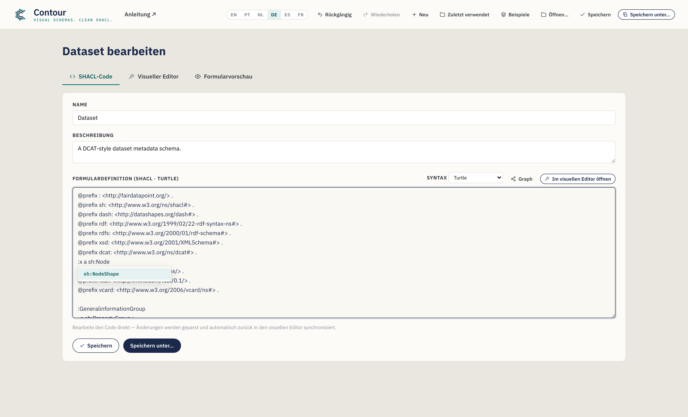
- Eine bestehende Datei öffnen. Öffnen … in der Kopfzeile lädt eine
.ttl-/.nt-/.trig-/.n3-Datei in diesen Tab, erkennt ihre Syntax und parst sie in den Visuellen Editor — ein schneller Weg, ein bestehendes Schema anzupassen. Wenn eine Datei nicht geparst werden kann, verweist eine Inline- Meldung auf die fehlerhafte Zeile; den Rohtext kannst du trotzdem bearbeiten. - Name und Beschreibung des Schemas haben oben in diesem Tab ebenfalls einfache Eingabefelder.
Klicke auf Im Visuellen Editor öffnen, um zur Drag-and-drop-Ansicht zurückzuspringen.
Eine Syntax wählen (und JSON-LD exportieren)
Eine Syntax-Auswahl in diesem Tab wechselt die Serialisierung zwischen
Turtle (Standard), N-Triples, TriG, Notation3 und JSON-LD
(Export). Die ersten vier sind voll editierbar — Änderungen werden
zurücksynchronisiert. JSON-LD ist nur für den Export (es gibt keinen
JSON-LD-Parser): Der Editor zeigt es schreibgeschützt an, damit du es
Kopieren oder als .jsonld-Datei Speichern unter kannst; wechsle dann
zurück zu Turtle, um weiterzubearbeiten.
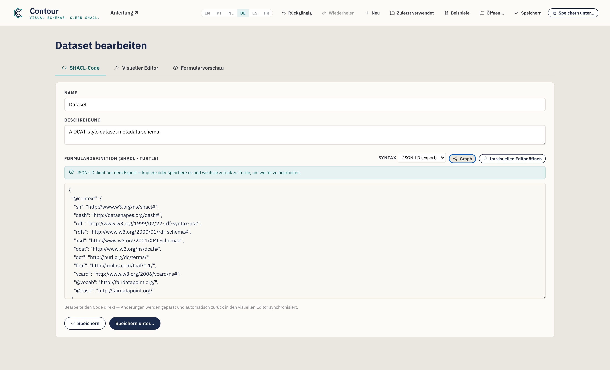
Neue Schemata starten immer als Turtle, und Speichern unter verwendet die Endung, die zur gewählten Syntax passt.
Das Bearbeiten eines bestehenden Schemas ist verlustfrei
Contour parst Dateien mit einer echten RDF-Engine, sodass das Öffnen, Bearbeiten
und Speichern eines Schemas niemals stillschweigend die Teile verwirft, die es
nicht visuell modelliert. Konstrukte, für die der Editor kein Bedienelement hat
— etwa sh:and, qualifizierte Wert-Shapes oder zusätzliche Annotationen —, werden
wortgetreu erhalten und in einem klar kommentierten „Preserved"-Block am
Ende der Ausgabe erneut ausgegeben. Wenn eine geladene Datei solche Konstrukte
enthält, siehst du in diesem Tab einen kurzen Hinweis; deine Änderungen an den
Teilen, die Contour tatsächlich modelliert, werden wie gewohnt angewendet, und
der Rest übersteht den Round-Trip unversehrt.
Den Graph visualisieren
Klicke in diesem Tab auf Graph, um eine Knoten-Kanten-Visualisierung des
RDF-Graphen des Schemas in einer Überlagerung zu öffnen — Shapes,
Eigenschaftsknoten, Klassen und Literale, verbunden durch ihre Prädikate. Scrolle
zum Zoomen, ziehe den Hintergrund zum Verschieben und ziehe einen Knoten, um ihn
neu zu positionieren. Zwei Schalter bändigen die Detailfülle (beide standardmäßig
aktiviert): Listen einklappen faltet eine sh:in-/sh:or-Liste zu einem
einzigen Chip zusammen, und Annotationen ausblenden lässt Bezeichnungen und
Formularhinweise (sh:name, dash:editor, sh:order, …) weg, damit die Struktur
hervortritt. Eine schnelle Möglichkeit, den Shape-Graphen (und alle
verschachtelten Shapes oder erhaltenen Konstrukte) auf einen Blick zu sehen.
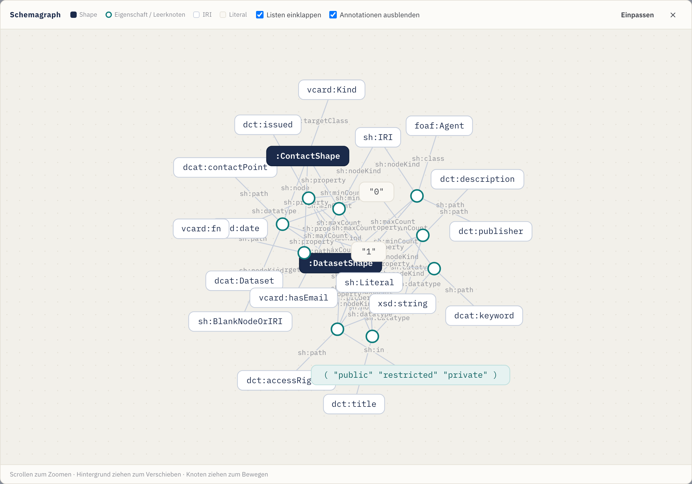
5. Deine Arbeit überprüfen (das Problem-Panel)
Während du baust, prüft Contour das Schema fortlaufend und fasst Probleme in der Problem-Anzeige in der Aktionsleiste des Visuellen Editors zusammen. Klicke darauf, um die Liste aufzuklappen; klicke auf einen beliebigen Eintrag, um direkt zum betreffenden Element zu springen.

Es markiert Dinge wie:
- eine Eigenschaft ohne Pfad oder doppelte Pfade in derselben Gruppe;
- eine Details-Eigenschaft, deren verschachtelte Shape fehlt;
- einen Pfad, eine Klasse, einen Datentyp oder eine Zielklasse, die ein nicht deklariertes Präfix verwenden;
- eine fehlende Zielklasse oder einen fehlenden Schema-Namen;
- verschachtelte Shapes mit fehlender oder doppelter IRI.
Probleme sind nicht blockierend — sie sind Orientierungshilfen, keine Sperren —, aber sie zu beheben bedeutet, dass das exportierte SHACL wohlgeformt ist und nur deklarierte Vokabulare referenziert.
6. Power-Funktionen (fortgeschrittene Modellierung)
Über die zentralen Widgets und Einschränkungen hinaus stellt der Inspektor einige fortgeschrittene Bedienelemente für reichhaltigere Schemata bereit. Jedes ist optional — greife darauf zurück, wenn dein Modell sie benötigt.
Bezeichnungen in mehreren Sprachen
sh:name und sh:description können eine Sprachmarkierung tragen, und du
kannst Übersetzungen hinzufügen, sodass ein Feld in mehreren Sprachen
benannt ist. Tippe im Abschnitt Basis eine Markierung (z. B. en) in das
kleine Feld neben der Bezeichnung; ein Übersetzungseditor lässt dich dann
weitere hinzufügen (pt → „Título", …). Jede wird zu einer eigenen
sprachmarkierten Aussage (sh:name "Title"@en, "Título"@pt), und die
Formularvorschau zeigt ein Sprachfeld am Feld.
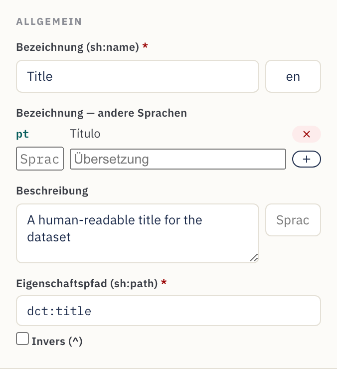
Zahlen- und Datumsbereiche
Felder vom Typ Zahl, Datum sowie Datum und Uhrzeit zeigen einen Block
Wertebereich unter Einschränkungen. Lege einschließende Min (≥) /
Max (≤) oder ausschließende (>) / (<) Grenzen fest — z. B. ein
Erscheinungsjahr ≥ 1900. Zahlen werden unverziert exportiert (sh:minInclusive 1900), Daten als typisierte Literale ("2000-01-01"^^xsd:date).
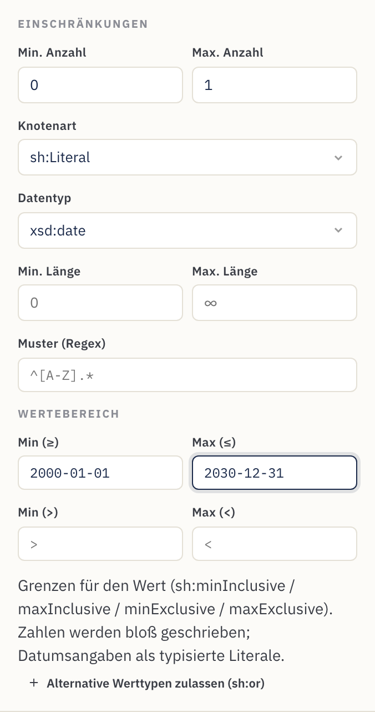
Benutzerdefinierte Validierungsmeldungen
Der Abschnitt Validierungsmeldung legt den Text fest, den eine Plattform
anzeigt, wenn ein Wert die Regel nicht erfüllt (sh:message), sowie dessen
Schweregrad — Violation (Standard), Warning oder Info (sh:severity).
Verwende ihn, um aus einem bloßen Fehlschlag eine für Stewards verständliche
Orientierungshilfe zu machen.
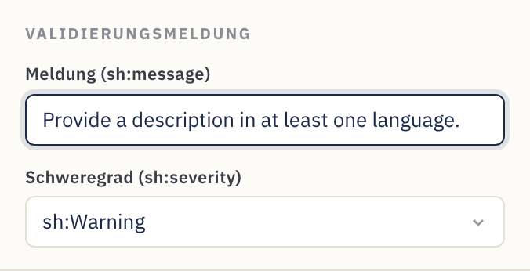
Alternative Werttypen (Literal oder IRI)
Manche Eigenschaften akzeptieren legitimerweise mehr als eine Art von Wert — ein
Thema, das freier Text oder eine IRI aus einem kontrollierten Vokabular sein
kann, etwa. Klicke auf Alternative Werttypen zulassen (sh:or) und liste die
Zweige auf (jeder ein Node kind, ein Datentyp oder eine Klasse). Es wird als
sh:or ( [ … ] [ … ] ) exportiert. Reichhaltigere logische Shapes, die Contour
nicht modelliert, werden beim Round-Trip dennoch erhalten (siehe
§4).
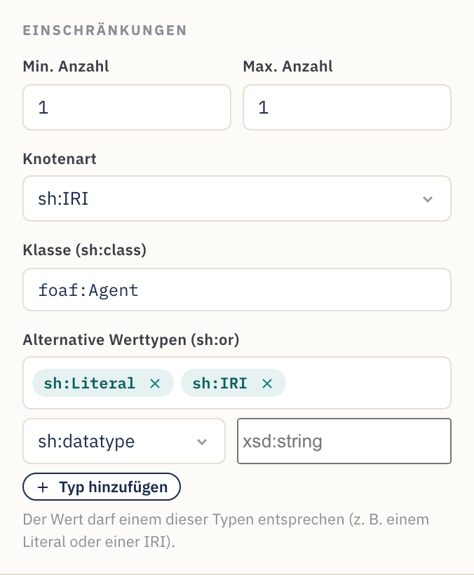
Inverse Pfade
Aktiviere Inverse (^) neben dem Eigenschaftspfad, um eine Beziehung
rückwärts abzugleichen — „Ressourcen, die auf diese verweisen" statt umgekehrt.
Es wird als sh:path [ sh:inversePath … ] exportiert, und die Eigenschaftskarte
zeigt den Pfad mit einem führenden ^.
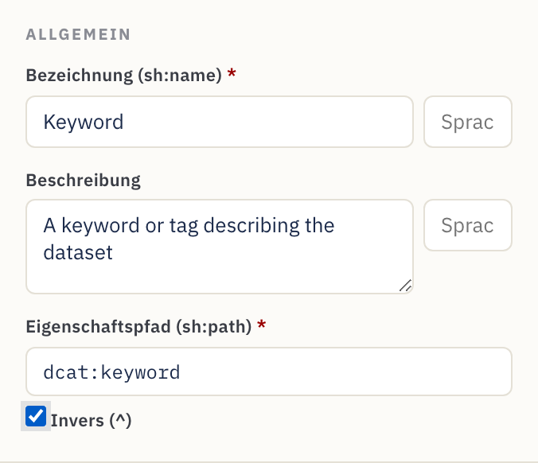
7. Referenz
Widget-Katalog
Jedes Widget wird auf einen DASH-Editor sowie ein sinnvolles Standard-Node-Kind / einen Standard-Datentyp abgebildet.
| Widget | DASH-Editor | Typische Verwendung | Standardwerte |
|---|---|---|---|
| Text field | dash:TextFieldEditor |
Einzeiliger Text | sh:Literal, xsd:string |
| Text area | dash:TextAreaEditor |
Mehrzeiliger Text | sh:Literal, xsd:string |
| Rich text | dash:RichTextEditor |
Formatierter Text mit Sprachmarkierung | sh:Literal, rdf:HTML |
| URI | dash:URIEditor |
Freier Link / IRI | sh:IRI |
| Auto-complete | dash:AutoCompleteEditor |
Eine Instanz anhand der Bezeichnung nachschlagen | sh:IRI, sh:class foaf:Agent |
| Instances select | dash:InstancesSelectEditor |
Dropdown von Instanzen | sh:IRI |
| Details (nested) | dash:DetailsEditor |
Eingebettetes Unterformular über eine verschachtelte Shape | sh:BlankNodeOrIRI |
| Enumeration | dash:EnumSelectEditor |
Auswahl aus einer festen sh:in-Liste |
sh:Literal, xsd:string |
| Boolean | dash:BooleanSelectEditor |
true / false | sh:Literal, xsd:boolean |
| Date picker | dash:DatePickerEditor |
Kalenderdatum | sh:Literal, xsd:date |
| Date & time | dash:DateTimePickerEditor |
Zeitstempel | sh:Literal, xsd:dateTime |
| Number | dash:NumberFieldEditor |
Numerischer Wert | sh:Literal, xsd:integer |
Standardwerte sind Ausgangspunkte — überschreibe das Node kind, den Datentyp oder die Klasse im Inspektor, wann immer dein Modell etwas anderes benötigt.
Referenz der Eigenschaftseinstellungen
Was jedes Inspektor-Bedienelement in SHACL schreibt:
| Inspektor-Feld | SHACL-Ausgabe | Hinweise |
|---|---|---|
| Bezeichnung | sh:name |
Die Formularbezeichnung. Eine optionale Sprachmarkierung + zusätzliche Übersetzungen geben ein sh:name pro Sprache aus. |
| Beschreibung | sh:description |
Hilfetext / ⓘ-Tooltip. Ebenfalls sprachmarkierbar, mit Übersetzungen. |
| Eigenschaftspfad | sh:path |
Erforderlich. Das RDF-Prädikat. Inverse (^) gibt [ sh:inversePath … ] aus. |
| Min count | sh:minCount |
≥ 1 macht das Feld erforderlich. |
| Max count | sh:maxCount |
Leer = unbegrenzt (wiederholbar). |
| Node kind | sh:nodeKind |
sh:Literal, sh:IRI, sh:BlankNode oder Kombinationen. |
| Datatype | sh:datatype |
Wird für Literal-Node-Kinds angezeigt. |
| Class | sh:class |
Wird für IRI-Node-Kinds angezeigt; beschränkt den Zieltyp. |
| Verschachtelte Shape | sh:node |
Wird für Details angezeigt; verknüpft mit einer verschachtelten Shape. |
| Min / Max length | sh:minLength / sh:maxLength |
Nur Literale. |
| Wertebereich | sh:minInclusive / maxInclusive / minExclusive / maxExclusive |
Zahlen und Daten. |
| Pattern (regex) | sh:pattern |
Nur Literale. |
| Zulässige Werte | sh:in ( … ) |
Enumeration-Auswahlmöglichkeiten; jeder Wert Literal oder IRI. |
| Alternative Werttypen | sh:or ( … ) |
„Einen dieser Typen akzeptieren" (z. B. Literal oder IRI). |
| Meldung / Schweregrad | sh:message / sh:severity |
Benutzerdefinierter Validierungstext + Violation / Warning / Info. |
| Standardwert | sh:defaultValue |
Vorbelegter Wert. |
| Reihenfolge | sh:order |
Feldreihenfolge innerhalb der Gruppe. |
Bedienelemente auf Schema- und Gruppenebene:
| Bedienelement | SHACL-Ausgabe |
|---|---|
| Schema-Name | rdfs:label an der NodeShape |
| Shape-IRI | das Subjekt der NodeShape |
| Zielklasse | sh:targetClass |
| Präfixe | @prefix-Deklarationen |
| Gruppenbezeichnung | rdfs:label an der sh:PropertyGroup |
| Gruppenreihenfolge | sh:order an der Gruppe; das sh:group des Felds verknüpft es |
8. Rezepte — gängige Modellierungsmuster
Kurze, in sich geschlossene Muster, die du zusätzlich zum Tutorial anwenden kannst.
Ein Feld erforderlich machen. Setze Min count auf 1. Die Karte zeigt
einen roten Punkt, und das Formular markiert es mit *.
Mehrere Werte zulassen. Lasse Max count leer (∞). Die Karte zeigt ein multi-Badge, und das Formular erhält + Hinzufügen.
Auf eine feste Liste beschränken. Verwende das Enumeration-Widget und
fülle die Zulässigen Werte aus. Exportiert als sh:in.
Auf eine Organisation oder Person verlinken. Verwende Auto-complete (oder
Instances select), Node kind sh:IRI und Class = foaf:Agent (oder
deine gewählte Klasse).
Ein strukturiertes Unterobjekt erfassen (Adresse, Kontaktpunkt,
Distribution). Erstelle eine verschachtelte Shape, füge ihre Felder hinzu und
richte dann eine Details (verschachtelt)-Eigenschaft über sh:node darauf
aus. Siehe Schritt 10.
Ein Format erzwingen. Setze für Literale ein Pattern (regex) und/oder Min/Max length — z. B. ein ORCID-Muster oder eine maximale Länge für ein Code-Feld.
Eine Zahl oder ein Datum eingrenzen. Verwende bei einem Zahlen-/Datumsfeld den
Abschnitt Wertebereich — z. B. Min (≥) 1900 für ein Jahr oder Max (≤)
ein Stichtagsdatum.
Eine Bezeichnung in mehreren Sprachen anbieten. Setze eine
Sprachmarkierung an der Bezeichnung (z. B. en) und füge Übersetzungen
hinzu (pt → „Título", …). Jede wird zu einem sprachmarkierten sh:name, und die
Formularvorschau zeigt ein Sprachfeld.
Ein Literal oder eine IRI akzeptieren (oder „einen dieser Typen"). Verwende
Alternative Werttypen (sh:or) an der Eigenschaft und liste die Zweige auf
(z. B. sh:nodeKind sh:Literal und sh:nodeKind sh:IRI). Häufig in DCAT-AP für
Werte, die Inline-Text oder eine Referenz sein können.
Einer Beziehung rückwärts folgen. Aktiviere Inverse (^) am Pfad, um
„Dinge, die auf diese Ressource verweisen" abzugleichen (z. B. Mitglieder einer
Sammlung) — exportiert als [ sh:inversePath … ].
Eine Validierungsregel erklären. Fülle die Validierungsmeldung mit einem für Stewards verständlichen Text und wähle einen Schweregrad, damit eine Plattform eine hilfreiche Warnung statt eines bloßen Fehlschlags anzeigen kann.
Nach JSON-LD exportieren. Stelle im Tab SHACL-Code Syntax → JSON-LD
(Export) und Kopiere oder Speichere unter .jsonld für Werkzeuge, die
JSON-LD verarbeiten.
Von einem Beispiel ausgehen. Verwende das Menü Beispiele, um eine Vorlage für Datensatz (DCAT), Agent (FOAF) oder Konzept (SKOS) zu laden, und passe sie dann an deine Bedürfnisse an.
Ein bestehendes Schema wiederverwenden. Öffne … die bestehende Datei, passe sie im Visuellen Editor an und Speichere sie dann als neue Datei unter … — alles, was Contour nicht modelliert, bleibt erhalten (siehe §4).
9. Tipps und Fehlerbehebung
- Setze immer den Eigenschaftspfad. Neue Widgets erhalten einen Platzhalterpfad
wie
:textfield; ersetze ihn durch den echten RDF-Term (dct:title,dcat:theme, …), sonst verwenden die exportierten Metadaten nicht den Term, den du beabsichtigst. - Deklariere die Präfixe, die du verwendest. Wenn ein Pfad oder eine Klasse
ein Kürzel verwendet (z. B.
vcard:), füge es unter Vokabulare hinzu, damit das Turtle gültig ist. - Ein Feld ist in der falschen Gruppe gelandet. Ziehe die Eigenschaftskarte in die richtige Gruppe; das Feld Gruppe im Inspektor ist schreibgeschützt und spiegelt das Verschieben wider.
- Änderungen am SHACL-Code wurden nicht synchronisiert. Die Synchronisation erfolgt kurz, nachdem du das Tippen beendest. Wenn ein Parse-Fehler angezeigt wird (mit einer Zeilennummer), korrigiere das Turtle — die visuelle Arbeitsfläche behält den letzten gültigen Stand, bis der Text geparst werden kann.
- Die Schaltfläche Speichern lädt nur herunter. Das ist das erwartete Verhalten als Rückfalllösung in Firefox/Safari. Für Speichern an Ort und Stelle verwende einen Chromium-basierten Browser (Chrome/Edge).
- Einen Fehler gemacht? Rückgängig (Strg/Cmd+Z) / Wiederholen (Strg/Cmd+Umschalt+Z) decken jede Änderung ab, und deine Arbeit wird automatisch gespeichert — ein Neuladen stellt sie wieder her.
- Sieh ins Problem-Panel. Klappe vor dem Exportieren Probleme in der
Aktionsleiste auf und behebe alle Fehler (leere Pfade, nicht deklarierte
Präfixe, defekte
sh:node). - JSON-LD bearbeiten? Geht nicht — es ist nur für den Export. Stelle Syntax zurück auf Turtle (oder N-Triples / TriG / N3), um weiterzubearbeiten.
- Von vorn beginnen. Verwende die Schaltfläche Neu für ein leeres Schema, lade eines aus Beispiele oder Öffne … eine bestehende Datei.
Erstellt mit Contour für das FAIR-Data-Point-Ökosystem. Die Ausgabe ist standardkonformes SHACL + DASH und funktioniert mit jedem SHACL-fähigen Werkzeug.